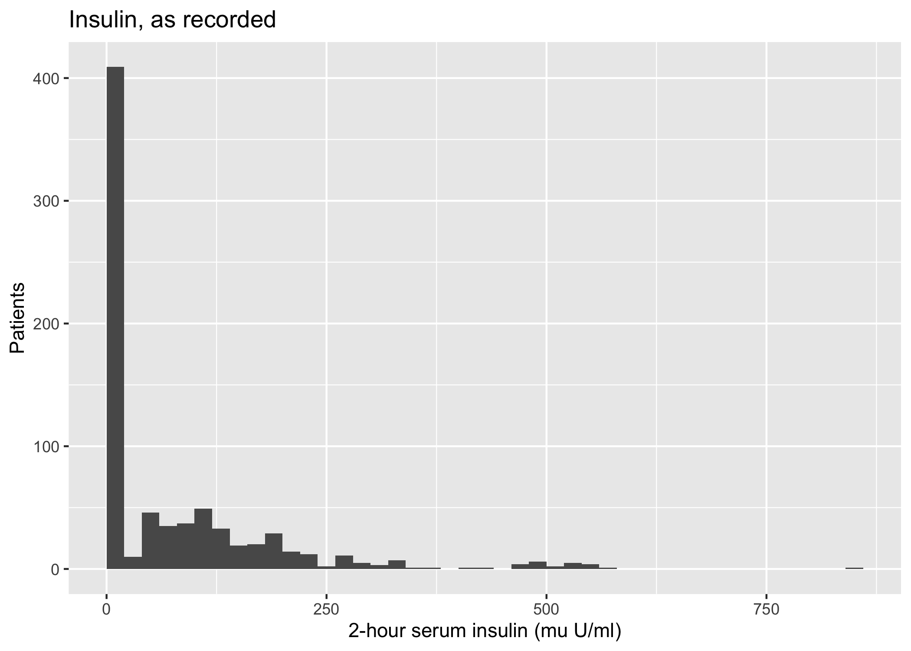
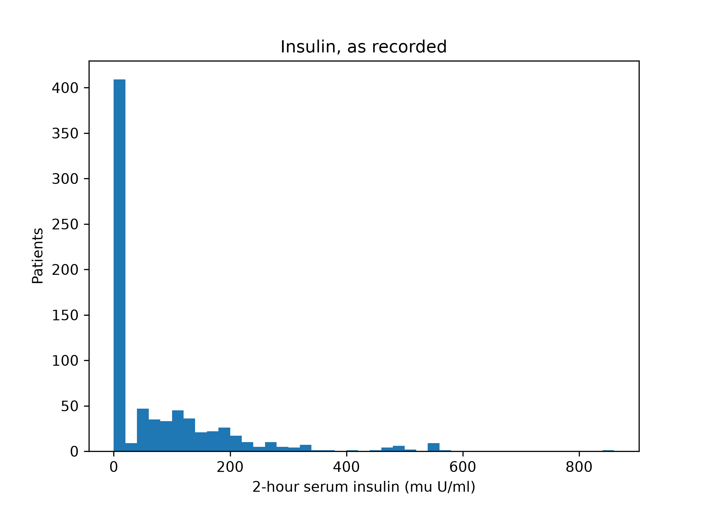
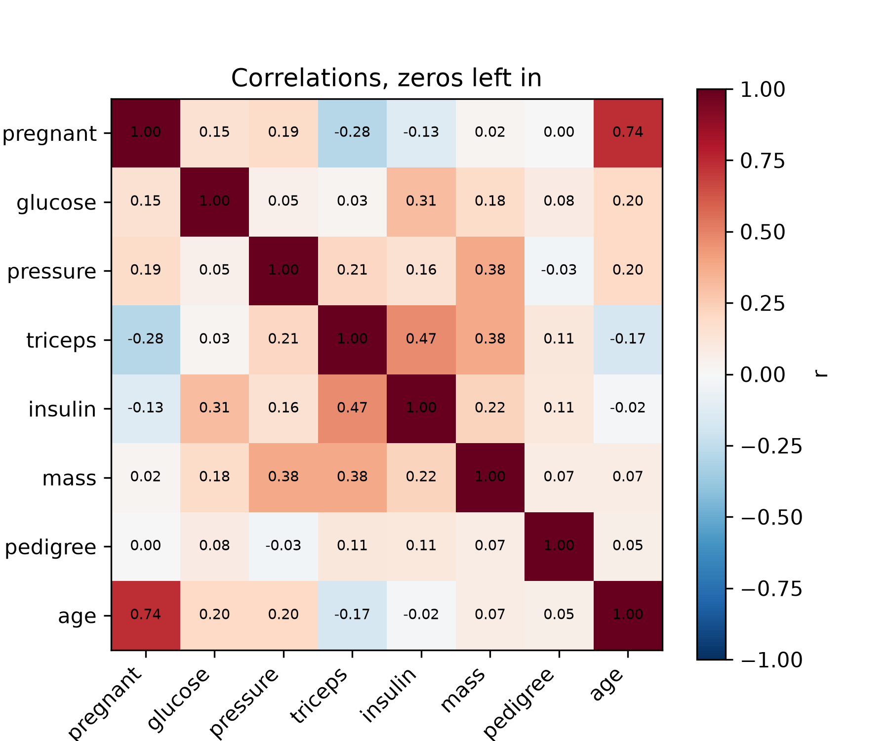

Every cell on this page is a real R or Python cell. Open day2-01-first-look.qmd in your editor and run them one at a time — the output printed here is what you should get. If a package is missing, run source("scripts/setup_local.R") once and restart R.
4.1 Objectives
Describe a numeric column with summary statistics and a plot, in either language, and say which of the two told you something the other hid.
Audit a data file for values that are legal to the computer and impossible in a patient, and quantify how many there are.
Read a correlation matrix and say which entries you do not believe, with a reason that is not “that seems high”.
4.2 Why this, here
On Day 1 the first task of the pipeline was load and inspect, and the file obliged: summary() showed an age of 109 and a median stay of 66 days, and both oddities were visible in the output. Today’s file is not so helpful. Every column of data/diabetes.csv is numeric, nothing is missing, no summary function complains, and the defect is still there. It is written as a zero.
4.3 The data
data/diabetes.csv holds 768 adults assessed for type 2 diabetes, and it is the file the rest of the module is built on. Eight measurements taken at a single screening visit — number of pregnancies, plasma glucose, diastolic blood pressure, triceps skinfold thickness, serum insulin, body mass index, a pedigree score summarising family history, and age — and one outcome, diabetes, recorded as pos or neg.
The scenario is screening. These are measurements a clinic can obtain cheaply in one visit, and the question is whether they identify who should be sent for a diagnostic test. That makes it the right case study for the rest of the module: the cost of a missed case and the cost of an unnecessary referral are plainly different, and from Day 4 you will be asked to act on that difference rather than to report accuracy and stop.
Read the insulin column of that output before going on. Minimum zero, first quartile zero, median zero, mean about 75, maximum 846. A serum insulin of zero is not a low reading; it is not a reading at all.
ggplot(diabetes, aes(x = insulin)) +geom_histogram(binwidth =20, boundary =0) +labs(x ="2-hour serum insulin (mu U/ml)", y ="Patients",title ="Insulin, as recorded")

import matplotlib.pyplot as pltfig, ax = plt.subplots()ax.hist(diabetes["insulin"], bins=range(0, 880, 20))ax.set_xlabel("2-hour serum insulin (mu U/ml)")ax.set_ylabel("Patients")ax.set_title("Insulin, as recorded")plt.show()

The bar at zero is taller than every other bar put together, and it is not a population of patients with no insulin. The same spike is in triceps, smaller spikes are in pressure, mass and glucose, and none of them is visible in a table of quartiles unless you are looking for it.
4.5 Task 1 — Count what cannot be true
Count the zeros in every numeric column and express them as a percentage of the 768 rows. Then decide, column by column, which of those zeros could be a real measurement. One of them can.
# Replace every ______ below, then run this cell.zeros <- diabetes |>summarise(across(where(is.numeric), ~sum(______))) |>pivot_longer(everything(), names_to ="variable", values_to ="n_zero") |>mutate(pct =100* n_zero / ______) |>arrange(desc(pct))zerosinsulin_pct <- zeros$pct[zeros$variable =="insulin"]insulin_pct # expect 45 to 60
TipStuck?
.x == 0 is a logical vector, and sum() of a logical vector counts the TRUEs. The denominator is the number of rows: nrow().
# Replace every ______ below, then run this cell.num = diabetes.select_dtypes("number")zeros = (pd.DataFrame({"n_zero": (num == ______).sum()}) .assign(pct=lambda d: 100* d["n_zero"] / ______) .sort_values("pct", ascending=False))print(zeros)insulin_pct = zeros.loc["insulin", "pct"]print(insulin_pct) # expect 45 to 60
Five columns carry zeros that no living adult can produce: insulin, triceps, pressure, mass and glucose. The sixth, pregnant, is a count of previous pregnancies, where zero is both common and true. Nothing in the file distinguishes the two kinds — that distinction is clinical knowledge you brought with you, and it is the reason a data dictionary is not optional.
4.6 Task 2 — Make the missing values missing
Replace the impossible zeros with NA (R) or np.nan (Python) in those five columns, leaving pregnant alone, and recompute the mean and median of insulin and triceps.
# Replace every ______ below, then run this cell.impossible <-c("glucose", "pressure", "triceps", "insulin", "mass")dia <- diabetes |>mutate(across(all_of(impossible), ~na_if(.x, ______)))mean_insulin <-mean(dia$insulin, na.rm = ______)mean_insulin # expect 140 to 180
TipStuck?
na_if(x, y) returns NA wherever x equals y. Every summary function in R refuses to average a vector containing NA unless you tell it to skip them.
# Replace every ______ below, then run this cell.impossible = ["glucose", "pressure", "triceps", "insulin", "mass"]dia = diabetes.copy()dia[impossible] = dia[impossible].replace(______, np.nan)mean_insulin = dia["insulin"].______print(mean_insulin) # expect 140 to 180
Compare the two means for insulin. The one computed with the zeros in place is a number that no textbook, no clinician and no laboratory would recognise, and it was produced by a function that did exactly what it was asked.
WarningNA is not a worse answer than a number
Students often resist this step because the dataset “gets smaller”. It does not get smaller; it stops lying. A mean over 363 measured insulins is an estimate of something. A mean over 768 values of which 405 are a clerical convention is an estimate of nothing, and it will not announce itself as one.
4.7 Correlation, and what it does with the zeros
The correlation matrix is the usual next step: one number per pair of columns, telling you which measurements move together.
A heatmap makes the structure readable at a glance. There are packages that draw prettier ones; the point here is that a correlation matrix is just a table of numbers, so anything that colours a table will do.
#> <matplotlib.colorbar.Colorbar object at 0x176c39390>
ax.set_title("Correlations, zeros left in")plt.show()

The largest off-diagonal entry is pregnant with age, around 0.74, which tells you nothing you did not know about how pregnancies accumulate. The next largest is insulin with triceps, about 0.47: serum insulin and skin-fold thickness, more strongly associated with each other than insulin is with glucose. Hold that thought.
4.8 Task 3 — Recompute the correlations on the measurements that exist
Build the same matrix from dia — the frame in which the impossible zeros are NA — using pairwise complete observations, and find the pair whose correlation changes most.
# Replace every ______ below, then run this cell.cor_na <-cor(dia[num_cols], use ="______")round(cor_na - cor_raw, 2)ins_tri <- cor_na["insulin", "triceps"]ins_tri # expect 0.0 to 0.3
TipStuck?
cor() has a use = argument; "pairwise.complete.obs" keeps, for each pair of columns, the rows where both are present. Read its help for what the other options do — they are not equivalent.
# Replace every ______ below, then run this cell.cor_na = dia[num_cols].______ # pandas skips missing values pairwise by defaultprint((cor_na - cor_raw).round(2))ins_tri = cor_na.loc["insulin", "triceps"]print(ins_tri) # expect 0.0 to 0.3
4.9 The result that should bother you
The strongest association in the raw matrix is mostly an artefact of the zeros, and one of the real associations was hidden by them. Both directions, in the same table.
insulin with triceps falls from about 0.47 to about 0.17 once the zeros are treated as missing. Every one of the 251 rows with a zero skin-fold also has a zero insulin, so a quarter of the file sits exactly at the origin of that scatter plot. Points at the origin, far below the real values, pull a regression line through themselves. The association was between the two recording failures, not between the two hormonal quantities.
triceps with mass rises from about 0.38 to about 0.61. Skin-fold thickness and body mass index measure overlapping things and should agree; the zeros were diluting that agreement towards the middle.
So the zeros did not add noise. Noise attenuates everything. They moved correlations, up for pairs that share a missingness pattern and down for pairs that do not — and nothing in the output marks which is which.
Here is the control. Take two columns that are independent by construction — random numbers with plausible means — and knock out exactly the rows that insulin and triceps have as zeros. There is no association whatsoever to find, so whatever correlation appears was manufactured by the zeros.
fake_insulin[diabetes["insulin"] ==0] =0fake_triceps[diabetes["triceps"] ==0] =0print(np.corrcoef(fake_insulin, fake_triceps)[0, 1]) # same zeros, same artefact
#> 0.40510188171280176
Two variables with nothing to do with each other, correlated at around 0.4 because they were blank on the same patients. The 0.47 you were about to report is that, plus a little.
4.10 Reflection
The zeros are not random: every zero triceps is also a zero insulin, but not the reverse. What kind of clinical process produces nested missingness like that, and would you expect the patients it affects to be like the rest?
You cannot fix this by deleting the affected rows and you cannot fix it by keeping them. Say in one sentence what each choice costs, and what you would need to know to choose.
4.11 Stretch
NoteStretch 1 — Does the missingness predict the outcome?
Make a binary column insulin_missing and cross-tabulate it against diabetes. If the patients with no insulin result differ in outcome from the rest, then the fact of measurement carries information — which is either a clinically real signal about who gets investigated, or a trap, depending on whether the same process will operate when your model is deployed.
NoteStretch 2 — Spearman instead of Pearson
Recompute the raw matrix with method = "spearman". Rank correlation is robust to outliers, and some people will tell you it therefore handles this. Check whether the insulin–triceps artefact survives, and explain the result: zeros are not outliers, they are ties at the bottom of the ranking.
4.12 What you can and cannot now claim
Can: that you have audited this file rather than described it, that you know how many values in each column are not measurements, and that you can name two correlations in the published matrix that are wrong and say in which direction.
Cannot: anything about what to do with those 405 absent insulins. Replacing them with a number is easy, and every way of doing it changes a different thing about the data. That is Chapter 5.